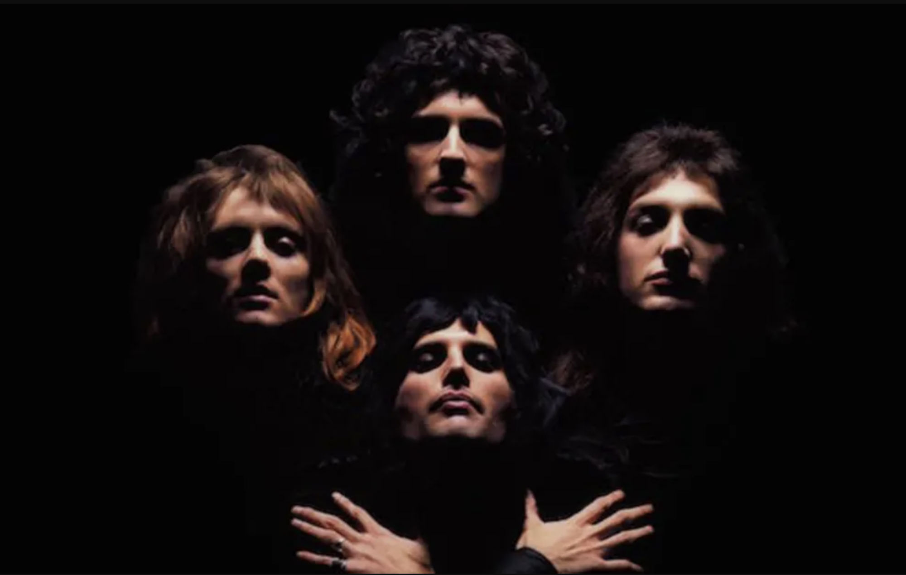

|
 |
||
The origins of pop musicPop music was originated in the United States and the United Kingdom.
The genre began as a mash-up of different popular music styles in the early 1950s.
|
1920s – 1940s : the birth of Jazz, Blues and R & BJazz defined the first important era in our pop music history timeline. Up until the 1920s, the western populace had loved classical music, church hymns, and ballads, so jazz brought something fresh to the scene while surprising audiences. Its unquestionable influence has influenced subsequent genres such as blues, R&B, and hip hop. Blues emerged from jazz, creating the groundwork for rock'n'roll. |
1950s – 1960s : Rock ’n’ Roll takes overIn the 1950s, pop musicians started to take influences from jazz and blues and the unique blend of genres birthed one of the most important revolutions in pop music history.
This was due to labels such as Columbia Records, who combined the music genres of this time to produce pop music.
|

|
|
 |
1970s – 1980s : Funk, Disco and Stadium RockThe mid-1960s saw the emergence of funk music, which was associated with protest movements and drew influences from genres such as soul, jazz, and R&B.
Pop rock artists like Elton John and Queen defined the 1970s music scene, and with the advancement of music technology and digital recordings, new genres such as disco, electro, techno, and house emerged.
|
1990 – 2000s : Hip Hop, Pop and GrungeHip Hop marked a significant revolution in pop music comparable to rock'n'roll and digital instruments.
Initially, mainstream companies and record labels were hesitant to accept rap and hip hop into the music scene, but once the wider public caught on, the genre became a permanent fixture.
This musical revolution reduced the emphasis on harmony and increased the importance of rhythm and speech.
|
|
Popular music todayBecause of technological innovation and the ingenuity of performers, popular music is constantly evolving,
drawing inspirations from many other genres and putting their own stamp on them. Hip hop, r&b, and soul dominated the charts in the second decade of the 2000s,
and there are still many artists adapting this genre now.
|